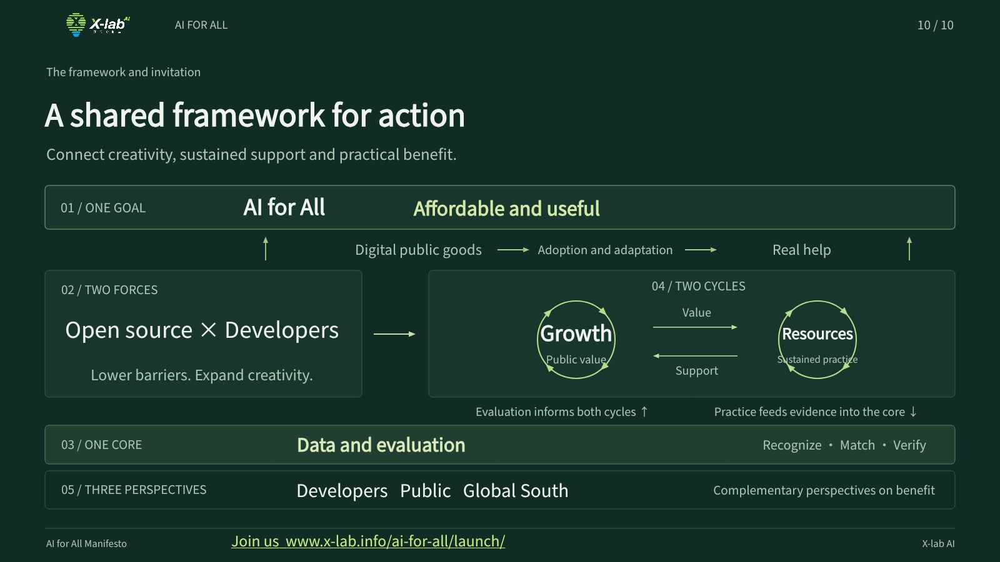

Share a real need
Describe who faces a problem and what currently makes it difficult.
Start here ↗Make AI affordable and useful.
Open technology creates opportunities for more people to build. Watch the manifesto, explore the materials and choose your starting point.
Your browser could not play this file. Use the download link above to watch it.
The English edition has English narration and visuals. The bilingual edition retains Chinese narration and visuals. All narration is AI generated.
Goals, framework and commitments. The Chinese text is authoritative.
Ten slides per language, with speaker notes.
Host introductions, two-minute remarks, closing invitation and playback guide.
Five connected elements and both reinforcing cycles.
A reusable code for event screens, programmes and print.
Subtitle files for all three films, attribution and source notes.

Whether you are learning, building a tool or offering a practical setting, you can take part. No prior contribution score is needed to begin.
Describe who faces a problem and what currently makes it difficult.
Start here ↗Code, documentation, teaching, translation and practical cases can all contribute.
Start here ↗Propose a practical setting or resources, then work together to define a next step.
Start here ↗A GitHub account is needed to post a contribution or proposal. Proposals are public. Partnership and resource conditions are agreed in subsequent discussion.
Music: “Heroic Age” — Kevin MacLeod (incompetech.com). CC BY 4.0. Excerpt, equalization, ducking and mix.
Consult the repository notice for manifesto, diagram and brand reuse terms. Third-party materials retain their own terms. Music attribution remains in each film. Full credits · Permissions